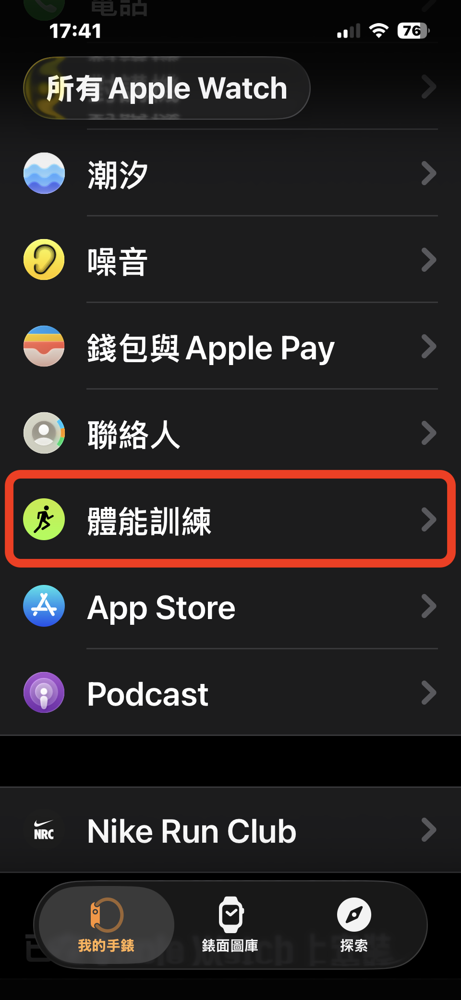
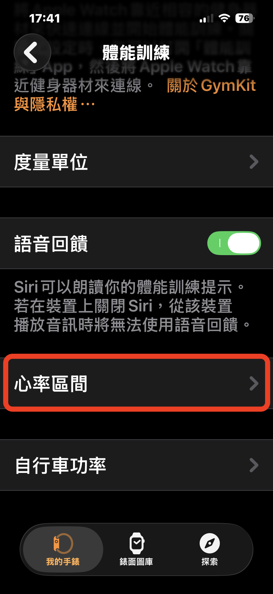
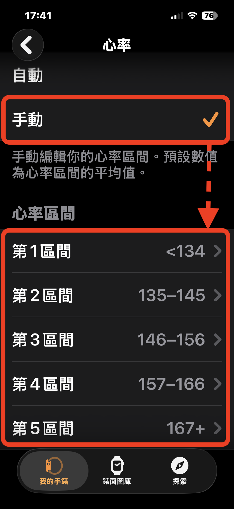

Apple Watch 的最大心率是怎麼來的？把心率區間改成「手動」，錶上的強度才對得上你
前陣子我寫了一篇文章，建議 Garmin 使用者把「最大心率自動偵測」關掉，也分享在 PPA 跑步線上課的群組裡，其中有學員看到後提問道：「Apple Watch 也會有一樣的問題嗎？好像沒辦法關。」
這個觀察沒錯，Apple Watch 上找不到這個開關，因為它本來就沒有這個功能。但這並不代表它的心率區間就沒問題：Apple Watch 的最大心率，是用你在「健康」App 裡填的出生日期算出來的。
這個月的專欄文章想把兩件事講清楚：
一、Apple Watch 的最大心率是怎麼來的；
二、Apple Watch 使用者該怎麼把心率區間改成自己的。
▎Apple Watch 的最大心率怎麼來
Apple 的官方說明寫得很清楚：心率區間是根據你的健康資料自動計算，而且要先在 iPhone 的「健康」App 填好出生日期才會開始計算。
Apple 沒有公開它用的是哪一條公式。我上網查到有幾位使用者拿錶上的數字反推，結果都吻合「208 - 0.7 × 年齡」這個公式，這是 Tanaka 等人在二〇〇一年提出的公式（Tanaka et al., 2001），所以 Apple 並不是使用最常見的「220 - 年齡」。
這只是推測，官方文件中未找到實際引用的公式。
但可以確認的是它也不會因為你跑出更高的心率就跟著更新。在 Apple 的使用者社群裡，有人實測跑到 195，錶上的最大心率卻一直停在 177，可見它不會因為使用者跑出更高心率就自動更新。
▎用年齡計算最大心率的公式為何不適合用
年齡公式給的是一整群同齡人的中間位置，但你不一定位在常態分佈的中間。
以上述的「208 - 0.7 × 年齡」這個公式來算，30 歲的人會得到 187。文獻估算出來的個體差異，標準差大約是 10 下（Tanaka et al., 2001），也就是說 177～197 之間大約只涵蓋三分之二的 30 歲跑者，剩下的三分之一散落在這個範圍以外。
二〇一五年起，我陸續為許多跑者實測過最大心率。同一個年齡層裡，我看過三十幾歲全力衝完、喘到說不出話，心率卻只到 170 出頭的跑者；也看過同齡的人跑出 210 以上。他們不是測錯了，也不是體能好壞的差別。
最大心率跟身高很像，是個人的生理特徵，不是愈高愈好，就只是個數字。
假設有兩位 30 歲的跑者，安靜心率都是 50，錶上的最大心率都是公式給的 187，照儲備心率法算出來，區間 2 的下緣是 151。
▹ 真實最大心率 170 的跑者：151 已經是他儲備心率的 84%，落在心率區間 2 的上緣，已逼近區間 3。
▹ 真實最大心率 210 的跑者：151 只有他儲備心率的 63%，連區間 2 都還沒進去。他照著錶上的心率區間跑，每天都乖乖完成課表，強度卻一直停在該有的位置以下。
同一個 151，一位跑得太硬，一位跑得太輕鬆，成因相同：錶上的最大心率是公式推出來的。
這些公式本身沒有錯，它們在研究裡有它們的位置。研究處理的是群體，個體的高估與低估會在大量樣本裡互相抵消；訓練面對的是你一個人，誤差不會被任何人抵消。樣本再大，也只能把平均值算得更準，沒辦法算出你在分佈上的位置。
對 Garmin 的使用者來說，問題是演算法可能把最大心率推高，Apple 的問題則是公式跟你本人有很大機率對不上。兩種錶預設的最大心率，都不是你親身跑出來的數字。（若你是 Garmin 的使用者，如果本來最大心率就比較高的反而比較不容易出錯；如果天生是在常態分佈左側低於同齡平均值的跑者，就特別容易被高估）
▎解決方法：把心率區間改成「手動」
Apple Watch 的心率區間可以在手錶或 iPhone 上改成手動：
▹ 在手錶上：「設定」→「體能訓練」→「心率區間」→「手動」
▹ 在 iPhone 上：打開「Watch」App →「我的手錶」→「體能訓練」→「心率區間」→「手動」

iPhone「Watch」App 的「我的手錶」分頁，往下找到「體能訓練」。

「體能訓練」設定頁，點進「心率區間」。

切到「手動」後，會列出區間 1 到區間 5，每一區都可以點進去修改。區間 1 只顯示上限（<134），區間 5 只顯示下限（167+）；圖中是 Apple 預填的預設值。
切到「手動」之後，五個區間都可以點進去修改。畫面上寫著「預設數值為心率區間的平均值」，這些預填的數字要換成你自己算出來的。
手動模式沒有地方可以直接填最大心率，所以要先把各區算好，再把數字填進去。我建議用儲備心率法來算，它只比最大心率法多用一個安靜心率：
各區心率 = 安靜心率 +（最大心率 - 安靜心率）× 百分比
▹ 區間 1：74% 以下
▹ 區間 2：74%～84%
▹ 區間 3：84%～88%
▹ 區間 4：88%～95%
▹ 區間 5：95% 以上
舉例來說，一位最大心率 190、安靜心率 50 的跑者，兩者相差 140，區間 2 到區間 5 的下限分別是 154、168、173、183，填進去就是：
▹ 區間 1：153 以下
▹ 區間 2：154～167
▹ 區間 3：168～172
▹ 區間 4：173～182
▹ 區間 5：183 以上
相鄰兩區的數字要接起來：前一區的上限加 1，就是下一區的下限。Apple 的預設值也是這樣排的，例如區間 2 到 145，區間 3 就從 146 開始。改成手動之後，錶就會用你填的數字，不會再跟著年齡公式走。
▎錶上的區間設定要改，RQ 上也要改
錶上的心率區間，決定的是你跑步當下看到的強度與警示；RQ 上的最大心率，決定的是事後分析的準確度與 AI 教練課表的個人化程度。
心率區間是 RQ 上訓練指數、跑力、體能指數、疲勞指數與狀況指數的原始資料來源，最大心率一旦設錯，這些分析都會跟著偏掉，而且不容易察覺，因為畫面上的數字看起來一切正常。
所以實測出來的最大心率，要在兩個地方都填進去：Apple Watch 的心率區間，以及 RQ 的最大心率設定。兩邊用同一個數字，跑步當下看到的強度，才會跟事後 RQ 的分析對得上。
還沒實測過最大心率的話，先用你在高強度間歇或測驗中跑出過的最高心率。那是你實際跑過的數字，用它來設區間比較安全；之後跑出更高的心率，再手動更新上去就好。
如果你的 Apple Watch 紀錄已經透過 Apple Health 同步到 RQ，也可以用 RQ 的「最大心率分析工具」幫你從過去的數據裡找。它會列出近 365 天內「15 秒滾動平均心率」最高的 10 筆紀錄，並附上日期與訓練名稱，可以直接一鍵套用成你的最大心率。用 15 秒滾動平均，是為了濾掉光學心率常見的 1、2 秒瞬間突然飆高的峰值，留下身體確實撐住過一段時間的高心率。
看排名時有一個判斷要自己做：如果第一名那筆紀錄的心率軌跡很奇怪，配速沒變、坡度也沒變，心率卻突然往上衝，通常是原始資料有誤，這時就改用第二名的數字。
「最大心率分析」這個工具新版要 RQ 白金會員才能使用，一般會員則可以使用舊版。
▎另外兩個要留意的設定
❶ 所有運動共用一組區間。 Apple Watch 的心率區間，跑步、騎車沒辦法分開設。照上面的方法設好之後，這組區間是依跑步的最大心率算的，如果你也用它騎車，錶上顯示的區間只能當參考。
❷ 「較少 GPS 和心率讀數」這個設定請別打開。 這個選項在體能訓練的設定裡，是為了延長電池設計的。一旦開啟，心率可能好幾分鐘才量一次，要用 Apple Watch 比較認真地跑課表（尤其是間歇）時，建議不要開啟。
▎個人參數要自己實測
跑錶愈做愈聰明，替我們省下很多設定的麻煩。但最大心率這個數字，只能靠自己的身體跑出來。用生日推的也好，用演算法算的也好，都只是估計。
我一直認為，個人原始參數要自己實測、手動填入；訓練數據的變數分析，再交給演算法。最大心率屬於前者。把實測的數字親手填進錶裡、填進 RQ，後面的每一區、每一項分析，才會比較個人化與符合你的訓練需求。
📚 參考資料
▹ Apple. (n.d.). 檢視 Apple Watch 上的心率區間. Apple Watch 使用手冊. 連結
▹ Apple Community. (n.d.). Heart rate zones and max and resting heart rate [Online forum thread]. 連結
▹ Garmin. (n.d.). 在我的 Garmin 手錶上，如何計算高心率和最大心率數值？ Garmin 客戶服務支援中心. 連結
▹ Maker, R. (2022, September 21). Apple Watch Ultra in-depth review: It's a start! DC Rainmaker. 連結
▹ Tanaka, H., Monahan, K. D., & Seals, D. R. (2001). Age-predicted maximal heart rate revisited. Journal of the American College of Cardiology, 37(1), 153–156. 連結
（本文同步刊登於 RQ 跑力「徐國峰專欄」）